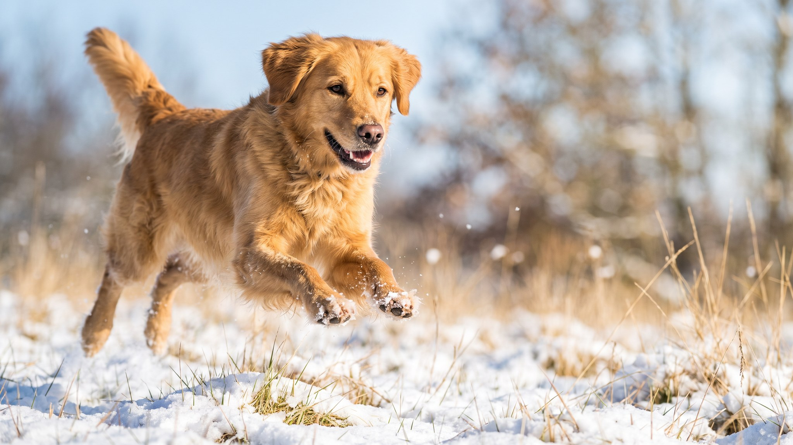

После первой же прогулки по снегу хозяева шерстистых собак видят знакомую картину: пёс поджимает лапу, останавливается, начинает грызть пальцы. Между подушечками набился ком льда. Это решается за 10 минут раз в несколько недель: нужно просто подстричь шерсть вровень с подушечками. Ниже разберём, зачем это важно и как сделать дома сегодня вечером.
🐾 Чтобы уход не держать в голове
AnimaLife напомнит, когда стричь когти, вычёсывать, купать и обрабатывать от паразитов, и заведёт дневник по вашему питомцу. Бесплатно.
Настроить напоминания → Настроить в MAX →
У вас iPhone? AnimaLife есть в App Store
Шерсть между пальцами хороша летом: защищает от горячего асфальта и мусора. Зимой она превращается в проблему.
Инструмент: ножницы с закруглёнными (тупыми) концами или тихий триммер. Острые прямые ножницы не подходят: собака дёрнется, острый конец у кожи легко поранит.
Порядок действий:
Первый раз собака может нервничать. Делайте по одной лапе с паузами, не торопитесь. Через два-три раза большинство собак привыкают.
Раз в 3–4 недели зимой. У пород с быстро растущей шерстью (лабрадудли, золотистые, шпицы, хаски) может понадобиться чаще. Проверка простая: проведите пальцем под лапой по подушечкам. Если шерсть не выступает ниже уровня подушечек, всё в порядке.
После каждой прогулки по снегу осматривайте лапы. Если между пальцами уже налип лёд, размойте его тёплой водой, не тяните руками: можно потянуть кожу.
Стрижка шерсти между лапами это уход, а не лечение. Но иногда владелец замечает то, что стоит обсудить с врачом:
Материал носит информационный характер и не заменяет очную консультацию ветеринара.
🐾 Заведите дневник ухода за собакой
Вес, шерсть, обработки, прививки — всё в одном месте. А если что-то смущает, AI-ветеринар ответит круглосуточно и бесплатно.
Завести дневник → Завести в MAX →
У вас iPhone? AnimaLife есть в App Store
🐾 Понравился разбор?
Подпишитесь на канал — каждый день разбираем по одному тревожному симптому у кошек и собак: что в пределах нормы, а когда пора к врачу. Подпишитесь, чтобы не пропустить разбор, который может спасти здоровье вашего питомца.